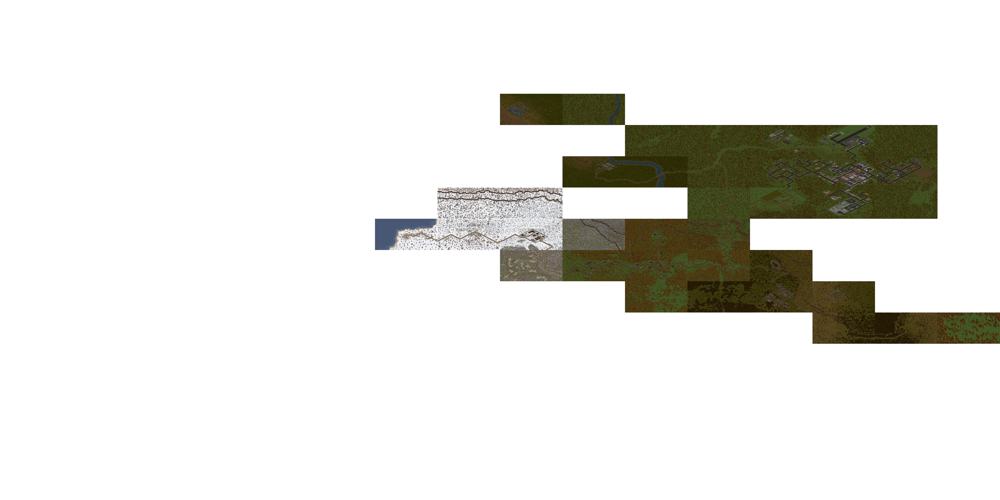

UB-AIMNAS World Map
⤢
?
‹
JA2 Unfinished Business + AIMNAS — bigmap sectors stitched into one map.
Level
Grid & labels
High-detail (zoom in)
Roofs
(off = interiors)
Drag to pan · scroll to zoom · click a sector
—
🔗 Copy link
Arulco World Map — Help
Pan
— drag the map.
Zoom
— scroll / mouse-wheel. High-detail tiles stream in as you zoom.
Select a sector
— click it for a highlight and the info readout; click it again (or click empty space) to deselect.
Levels
— switch between Surface and Basement 1–3 with the
Level
dropdown.
Layers
— toggle towns, mines, SAM sites, garrisons, quests, creature zones, roads, terrain and the difficulty heatmap in the legend.
Share a view
— the address bar updates as you pan, zoom and select. Use
🔗 Copy link
on a selected sector (or copy the URL) to share the exact view; opening it restores the position, zoom and selected sector. A bare sector code (e.g.
#C13
) also works.
Touch
— drag with one finger to pan, pinch with two to zoom, tap a sector to select.
Keyboard
—
↑ ↓ ← →
or
W A S D
to pan,
+
/
−
to zoom,
F
to fit the whole map,
Esc
to deselect.
Reset / Collapse
—
⤢
fits the whole map;
‹
folds this panel away (
☰
brings it back).
Close
Loading map…
